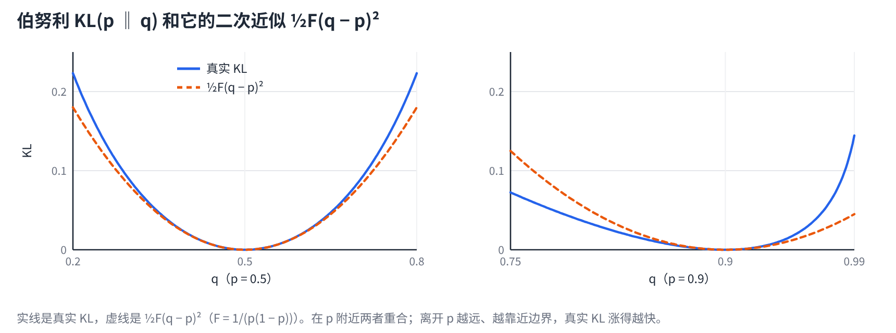
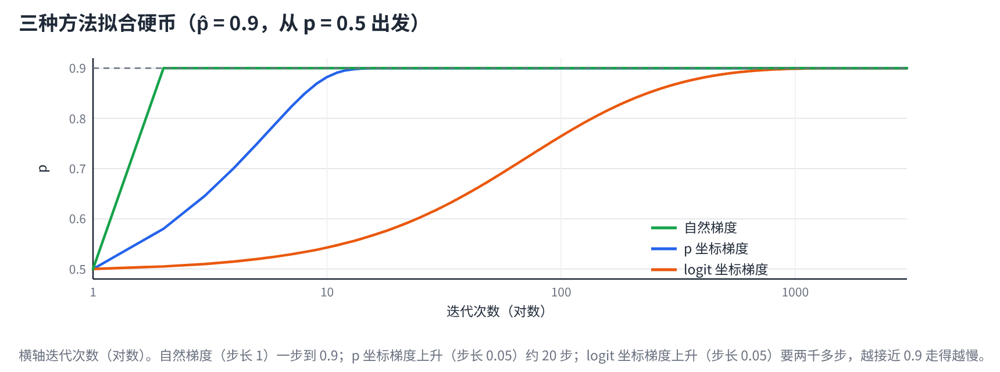
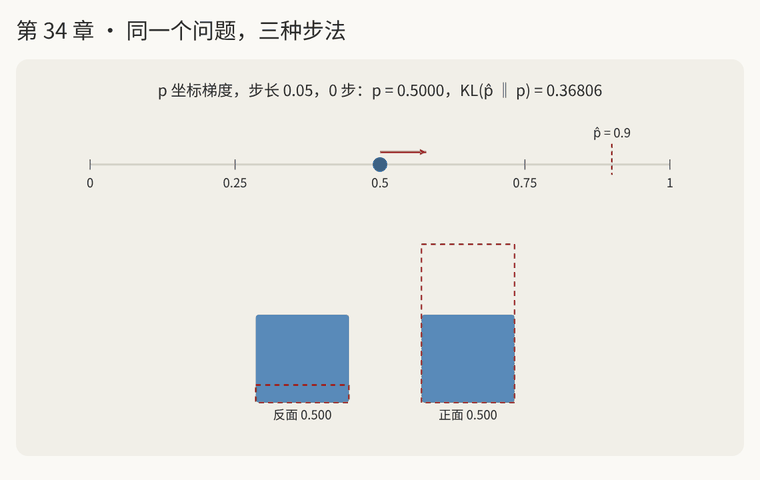

第 34 章 · 信息几何：Fisher 信息、KL 的局部二次近似、自然梯度、TRPO / PPO 的信任域
本地运行
git clone https://github.com/wikieden/math-and-eval-stats
cd math-and-eval-stats/code/notebooks
pip install jupyterlab torch numpy
jupyter lab ch34_information_geometry.ipynb也可以下载后直接用 VS Code 打开 .ipynb 运行。需要 GPU 的章节在 Colab 里选「代码执行程序 → 更改运行时类型 → GPU」。
本章回答：Fisher 信息到底在量什么？为什么说"KL 在局部是一个二次型"？普通梯度下降为什么换个参数化就变快或变慢，自然梯度怎么做到不受影响？TRPO 的约束优化和 PPO 的截断各在近似什么？
讲解日期：2026-11-25 · 上一章：第 33 章 最优传输 · 下一章：第 35 章 卷积的数学
对应原文：Nielsen 2018《An Elementary Introduction to Information Geometry》math-and-eval-stats/materials/text/papers/information-geometry-intro-1808.08271.txt（Fisher 信息矩阵定义 L1007、单变量高斯的 FIM L1133–L1141、自然梯度 §4.1，概述 L99）；TRPOcs285-deep-rl/materials/text/papers/trpo-1502.05477.txt（用解析 Hessian 构造 FIM L627；自然策略梯度是"线性目标 + KL 的二次近似"的特例 L694–L704；共轭梯度 L579）
本章缩写：F = Fisher Information Matrix（Fisher 信息矩阵，Fisher 是英国统计学家）；score = ∇_θ log p_θ(x)；KL = Kullback–Leibler 散度；TRPO = Trust Region Policy Optimization（信任域 / 策略优化）；PPO = Proximal Policy Optimization（近端策略优化）；η = logit 参数；ε（本章）= 信任域半径（KL 上限）。全部缩写见 附录 · 缩写与术语表
讲解
第一步：Fisher 信息：score 的方差 = 对数似然的平均曲率（2026-11-25）
类比：一枚硬币的正面概率 p 能被数据"看得多清楚"。 改一点 p，数据的样子变化越大，p 越容易估准，Fisher 信息越大。
（Nielsen L1007）第一种写法是 score 的方差（score 的期望是 0），第二种是对数似然的平均曲率。Cramér-Rao：任何无偏估计的方差 ≥ 1/(nF)。
例子（伯努利(p)，解析 F = 1/(p(1−p))；40 万个样本算 score² 的均值）：
| p | 解析 | 样本 |
|---|---|---|
| 0.5 | 4.0000 | 4.0000 |
| 0.9 | 11.1111 | 11.0849 |
p = 0.9 时 F 更大：靠近边界时，p 的一点变化让数据的样子变化很大（0.9 和 0.95 的反面次数差一半）。
一句话：Fisher 信息 = score 的方差 = 对数似然的平均曲率，量"参数变一点，分布变多少"。
第二步：KL 在局部是一个二次型（2026-11-25）
把 KL(p_θ ‖ p_{θ+δ}) 对 δ 做泰勒展开：零阶项 0、一阶项 0（score 期望为 0），二阶项正好是 Fisher：
所以 F 是参数空间上"按分布差异量距离"的度量（Fisher-Rao 度量）：同样的 δ，F 大的地方分布变得多。
例子（伯努利）：
| p | δ | 真实 KL | ½Fδ² |
|---|---|---|---|
| 0.5 | 0.1 | 0.020411 | 0.020000 |
| 0.5 | 0.01 | 0.000200 | 0.000200 |
| 0.9 | 0.05 | 0.020654 | 0.013889 |
δ 小时近似很准；p = 0.9、δ = 0.05 时已经走到 0.95，接近边界，F 变化快，二次近似偏小。

图 34-1 · 横轴 q，纵轴 KL(p ‖ q)；实线是真实 KL，虚线是 ½F(q − p)²；左 p = 0.5、右 p = 0.9，靠近边界的一侧真实 KL 涨得更快一句话：KL 局部 ≈ ½δᵀFδ，Fisher 信息就是"分布空间里的距离尺"。
第三步：自然梯度：按 KL 量步长，换参数化也不变（2026-11-25）
问题：普通梯度下降的"一步多大"按参数的欧氏距离量。同一个分布换个参数写法（p 还是 logit η），欧氏距离就不一样，收敛速度可以差几个数量级。
自然梯度（Nielsen §4.1）：在"KL 不超过一个小量"的约束下找下降最快的方向，解是
它只依赖分布本身，不依赖参数怎么写（换参数化时 F 和 ∇ 按雅可比一起变，抵消掉）。
例子（拟合硬币：数据正面比例 p̂ = 0.9，从 p = 0.5 出发，最大化平均对数似然，到 |p − p̂| < 10⁻⁶ 用了几步）：
| 方法 | 步数 |
|---|---|
| 在 p 上做梯度上升（步长 0.05） | 22 |
| 在 logit η 上做梯度上升（步长 0.05） | 2552 |
| 自然梯度（步长 1） | 1 |
在 p 坐标里 ∇ℓ = (p̂ − p)/(p(1−p))，F = 1/(p(1−p))，自然梯度 = p̂ − p：步长 1 一步就到。logit 坐标里普通梯度是 p̂ − p，没有 1/(p(1−p)) 的放大，越靠近 0.9 走得越慢。

图 34-2 · 横轴迭代次数（对数），纵轴 p；自然梯度一步到位，p 坐标的梯度上升二十几步，logit 坐标的梯度上升要两千多步一句话：自然梯度 = F⁻¹∇，按 KL 量步长，和参数化无关；普通梯度的速度取决于你怎么写参数。
第四步：TRPO：在 KL 球里走最陡的方向（2026-11-25）
TRPO 的每一步（TRPO L694–L704）：目标线性化、KL 约束二次化：
实际中 F 太大存不下，用共轭梯度只算 F⁻¹g（L579），再做线搜索确认真实 KL 和目标提升。
例子（一维高斯策略，参数 θ = (μ, log σ)，σ = 0.5，Fisher = diag(1/σ², 2) = diag(4, 2)，Nielsen L1141；梯度 g = [1, 1]，ε = 0.01）：
| δμ | δ log σ | 真实 KL | |
|---|---|---|---|
| 自然梯度方向 | 0.0408 | 0.0816 | 0.00915（二次近似 0.01） |
| 普通梯度方向（缩到同样的二次 KL） | 0.0577 | 0.0577 | — |
μ 方向的 Fisher 更大（σ 小，均值一动分布就变很多），自然梯度在这个方向走得更少、在 log σ 方向走得更多。
一句话：TRPO = 线性化目标 + 二次化 KL，解出自然梯度方向、按 KL 预算定步长，再用线搜索兜底。
第五步：PPO 与 softmax 策略的 Fisher（2026-11-25）
PPO（第 24 章第五步）：不算 F，而是把重要性比率 r = π_new/π_old 截在 [1 − ε, 1 + ε]。比率靠近 1 时 \(\text{KL} \approx \frac12\mathbb E[(r - 1)^2]\)，截断比率就是粗略地限制 KL：它是 TRPO 信任域的一阶、便宜的替身。很多 PPO 实现还会监控近似 KL，超过阈值就提前结束这一轮更新。
softmax 策略的 Fisher 是奇异的：对 logits z，\(F = \text{diag}(p) - pp^\top\)。所有 logits 同加一个常数，策略不变，所以 F 在 [1, 1, …, 1] 方向上是 0。
例子：p = [0.7, 0.2, 0.1] 时 F 的特征值 [0, 0.1256, 0.3344]：有一个 0。实际中用伪逆或加阻尼 F + λI 求逆（TRPO、K-FAC 都这么做）。
场景代码：PPO 里监控 KL 提前停止（PyTorch 写法，示意结构；本书环境没装 torch，没跑过）：
ratio = torch.exp(logp_new - logp_old)
loss = -torch.min(ratio * adv, ratio.clamp(1 - 0.2, 1 + 0.2) * adv).mean()
approx_kl = ((ratio - 1) - torch.log(ratio)).mean() # 非负、无偏的 KL 近似
if approx_kl > 1.5 * target_kl: break # 走出“信任域”就停
一句话：PPO 用截断比率粗略守住 KL 信任域；softmax 的 Fisher 有零特征值，求逆要加阻尼。
动画演示：同一个问题，两种坐标

可交互版：animations/34-information-geometry.html（下拉切换"p 坐标 / logit 坐标 / 自然梯度"；滑块调迭代次数和步长）。
怎么看：
- 上方是参数轴，点是当前参数，箭头是这一步；下方是对应的伯努利分布柱状图（第三步）；
- logit 坐标：越接近 0.9 箭头越短，要很多步；
- 自然梯度：箭头长度按 KL 定，一步跳到 0.9。
练习与作答记录
题 1（第一步）：N(μ, σ²)（σ 已知）对 μ 的 Fisher 信息是多少？用 n 个样本估计 μ，Cramér-Rao 下界是多少？样本均值达到了吗？
作答：（待作答）
题 2（第二步）：用 ½Fδ² 估计 KL(Bernoulli(0.2) ‖ Bernoulli(0.25))，再精确算一遍（保留 4 位）。
作答：（待作答）
题 3（第四步）：Fisher = diag(4, 1)，梯度 g = [2, 1]，ε = 0.02。算 TRPO 的步 δ。
作答：（待作答）
口诀
Fisher 是 score 的方差、似然的曲率；
KL 局部是二次型，F 是分布空间的尺；
自然梯度 F 逆乘梯度，换参数也不变；
TRPO 线性目标加二次 KL，共轭梯度求方向；
PPO 截比率是便宜替身，softmax 的 F 要加阻尼。
本章复习卡片
ST115（Fisher 信息的两种写法；KL 的二次近似）、ST116（自然梯度为什么和参数化无关）、ST117（TRPO 的步长公式；PPO 与信任域；softmax Fisher 奇异）。练习做完后，按答错、卡住的地方补上。
附录 · 延伸阅读
留给以后深入学习用，不影响本章主线。★ 是建议先读的。
推荐阅读
| 读什么 | 读哪里 | 读它为了什么 |
|---|---|---|
| ★ Nielsen 2018 | Fisher 信息矩阵（L1007 起）、§4.1 自然梯度 | 本章前三步 |
| ★ TRPO（Schulman 2015） | §3–4、附录 C（L579、L627、L694） | 信任域、共轭梯度 |
| 第 24 章 策略梯度推导 | 第五步 | PPO、GRPO 的目标 |
| 《从零学强化学习》第 23 章 PPO | 全章 | PPO 的工程细节 |
| 第 10 章 信息论与 KL | 全章 | KL 的基础 |
数学原理
- score 的期望为 0：\(\mathbb E[\nabla\log p_\theta] = \int\nabla p_\theta = \nabla\int p_\theta = 0\)。
- 两种 Fisher 写法相等：\(\nabla^2\log p = \nabla^2p/p - \nabla\log p\nabla\log p^\top\)，第一项期望为 0。
- 重参数化不变性：θ = h(φ) 时 \(F_\phi = J^\top F_\theta J\)、\(\nabla_\phi = J^\top\nabla_\theta\)，所以 \(J\,F_\phi^{-1}\nabla_\phi = F_\theta^{-1}\nabla_\theta\)：两种坐标里的自然梯度步对应同一个分布变化（到一阶）。
- 信任域解：拉格朗日 \(g - \lambda F\delta = 0\) ⇒ δ ∝ F⁻¹g，再由约束取等号定系数。
公式清单
| 公式 | 意思 |
|---|---|
| \(F = \mathbb E[\nabla\log p\nabla\log p^\top] = -\mathbb E[\nabla^2\log p]\) | Fisher 信息 |
| \(\text{KL}(p_\theta\|p_{\theta+\delta}) \approx \frac12\delta^\top F\delta\) | KL 的二次近似 |
| \(\tilde\nabla = F^{-1}\nabla\ell\) | 自然梯度 |
| \(\delta = \sqrt{2\epsilon/(g^\top F^{-1}g)}F^{-1}g\) | TRPO 步 |
| \(F_{\text{softmax}} = \text{diag}(p) - pp^\top\) | softmax 策略的 Fisher |
代码对照：把本章的数字用代码算一遍
代码在仓库本地
math-and-eval-stats/solutions/chapter-code/ch34_information_geometry.py，配套测试tests/test_ch34.py：
bash cd math-and-eval-stats/solutions/chapter-code uv run python ch34_information_geometry.py uv run pytest tests/test_ch34.py
讲义 ↔ 代码：
| 讲义 | 公式 | 写法 | 跑出来 |
|---|---|---|---|
| 第一步 Fisher | score² 均值 | fisher_bernoulli(0.9) |
11.1111 vs 11.0849 |
| 第二步 KL 近似 | ½Fd² | kl_quadratic(0.5, 0.1) |
0.020411 vs 0.02 |
| 第三步 自然梯度 | 三种更新 | fit_coin("gd_logit") |
2552 步 |
| 第四步 TRPO | 信任域步 | trpo_step(np.array([1.0, 1.0])) |
[0.0408, 0.0816] |
| 第五步 softmax | diag(p) − ppᵀ | softmax_fisher(p) |
特征值含 0 |
关键几行：
s = x / p - (1 - x) / (1 - p) # 伯努利的 score
p = p + 1.0 * (p_hat - p) # 自然梯度：F⁻¹∇ = p̂ − p
nat = np.linalg.solve(f, g); d = np.sqrt(2 * eps / (g @ nat)) * nat # TRPO 步
代码里才看得到的 3 件事：
- p 坐标的梯度上升要截断到 (0, 1)：步长大时 p 可能越界，代码用
np.clip；自然梯度和 logit 坐标天然不会越界。 - TRPO 的"真实 KL"用的是高斯 KL 闭式：log σ 参数要先 exp 回 σ 再代公式，所以真实 KL（0.00915）和二次近似（0.01）不完全相等。
- 零特征值打印成 −0.0：浮点误差让它略小于 0，代码加 0.0 把 −0.0 变成 0.0（第 22 章的浮点细节）。
自己改一改（不影响练习答案）：
- 把
fit_coin的目标改成 p̂ = 0.99，三种方法的步数怎么变？ - 把 TRPO 例子的 σ 改成 2，看自然梯度在 μ 方向的步长怎么变。